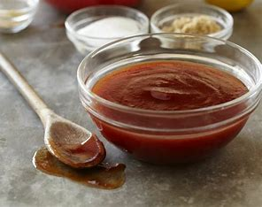
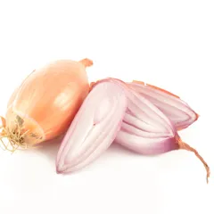

Sauce Barbecue maison

INGRÉDIENTS POUR 4 PERSONNES
 |
20cL d'eau |
 |
Sel |
|  | Echalote |
 |
2 cuillère à soupe de ketchup |
 |
Poivre |
| 20cL de vin blanc | |
| 1 bouillon de boeuf | |
 |
2 cuillère à soupe de moutarde |
PRÉPARATION
|